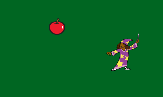

The purpose of my game was to entertain. My goal was to create something fun and addicting in a simple way. However, I am not really satisfied with my results. I wanted to add more to it (sound, visually sumptuous effects, etc.). One difficulty I had when creating the game was that when one sprite was doing what it was supposed to (via the script), the other sprite would freeze. Apparently, there was an error in one of the scripts.

This Fruit Wizard game was not my first game on Scratch, but it was my first one this year. It was mainly a refresher of what i've done last year in ECS. The purpose of this game was to cover/review the basics of Scratch. OWO
This project was fairly easy to code, but my partner and I had a hard time coming up with a story. We finally decided to have the story be based off of a scene in Guardians of the Galaxy 2, where Baby Groot steals the Death Button from Rocket. The reader's role in this is to retrieve the Death Button, facing several obstacles on their mission.